1背景
公元 1610 年。世界站在变革的临界点——古老教条与新生的理性之间，平衡极其脆弱。新真理的耳语在学术圣殿与喧闹集市中回响。
尼古拉·哥白尼的激进学说曾只是边缘异说，如今却找到了强大的拥护者——伽利略·伽利雷。他对宇宙的革命性观测正在撼动公认知识的根基。
你是一位学者，正处在思想激荡的危险年代，被卷入对真理的追寻。你将撰写突破性的论文、创造精巧的发明，并通过自制的望远镜仰望星空；然而宗教裁判所的阴影笼罩一切，监视着你的每一项发现、每一个低声议论的学说。一次失足、一句过于大胆的宣告，都可能招致逮捕、著作被禁，甚至火刑。
你会追寻真理，还是在恐惧的紧握下被迫放弃？知识——或许还有你的生命——的归宿，握在你手中。
2概览
游戏在 3 个时期 内进行，共分为 5 个循环。每个循环再分为 3 个阶段。每个时期结束时，宗教裁判所将以怀疑审视玩家的工作，并对违规者施以惩罚。游戏结束时，胜利点最高的玩家胜出。
胜负：游戏结束时，胜利点最多的玩家获胜；若平局，则回合顺序最靠前的玩家获胜。
| 时期 | 循环数 |
|---|---|
| 第一时期 | 2 个循环 |
| 第二时期 | 2 个循环 |
| 第三时期 | 1 个循环 |
循环的三阶段
- 收入阶段（循环 1 跳过）
- 行动阶段
- 循环结束阶段
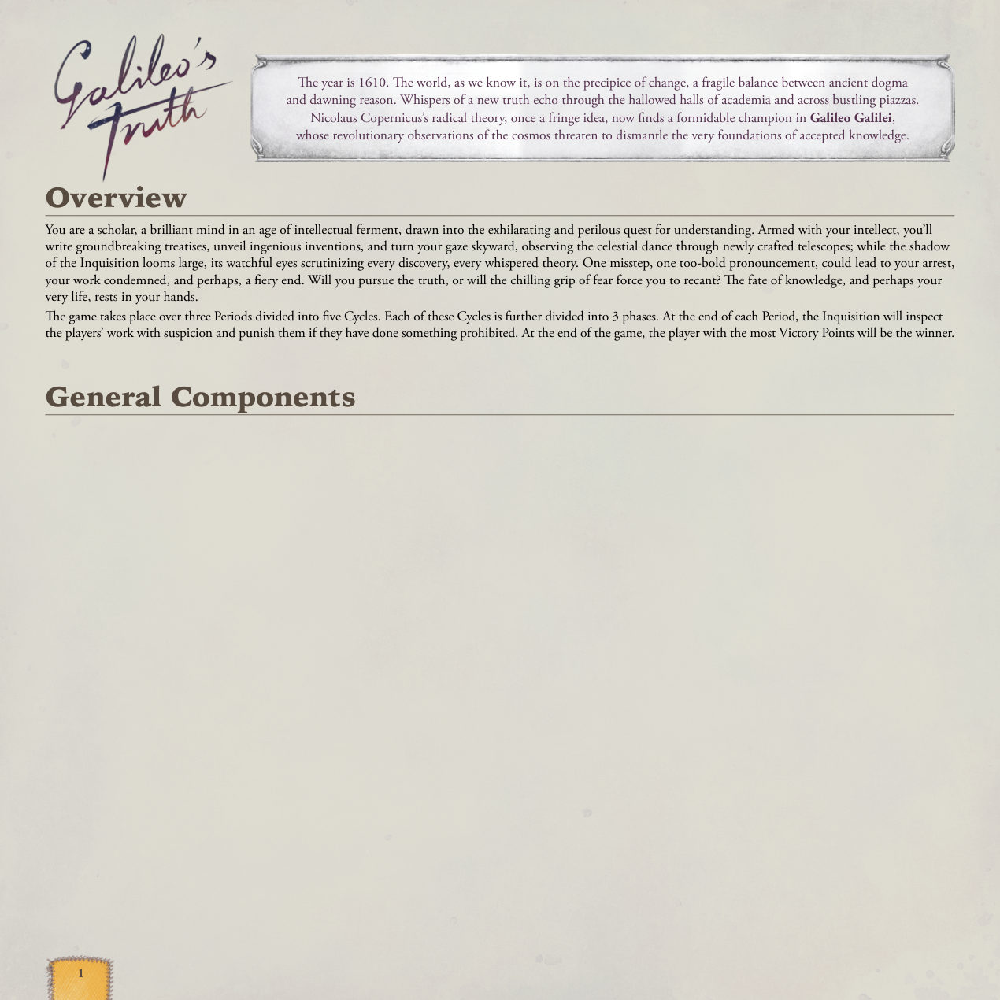
3组件
通用组件
中央放置的版图，包含行动格、循环轨、回合顺序轨、宗教裁判标记位、循环标记位、工坊、毕业板块位、禁令板块位、大教堂、分数轨、怀疑轨。
堆叠成金字塔形：Level I 在底，Level IV 在顶。承载所有可撰写的著作牌。
标有「2」的面朝上，放置在分数轨上对应的怀疑格。
按背面分成数叠，分别洗混后各抽出 3 张，按字母对应位置面朝上放入分数轨。
面朝下放入回合顺序轨的指定位。
放在循环轨第一步上。
按时期（I/II/III）背面分开，分别洗混。时期 I 牌组抽 4 张面朝上放入工坊（主版图左上方位，从上到下）。
按背面的星数分成三堆，放入对应布袋。
随机面朝上放入主版图上 4 个专用位。
按背面分堆洗混，每堆抽 1 张面朝上放入主版图上对应毕业板块位。
按背面分堆洗混，每堆抽 1 张面朝上放入主版图上对应禁令板块位。
按 Level（I/II/III/IV）分成四堆。Level I 全数面朝上放底层（紫色牌保持原位，其余按数字升序）。Level II/III/IV 洗混后抽 4/3/2 张面朝上放对应排（紫色牌保持原位）。每堆最终需 1 张随机卡 + 玩家数量张著作牌叠好。
2 人局：抽 2 张；3 人局：抽 1 张；用于在缺少玩家颜色组件时调整。
冲突处理：毕业板块与禁令板块若带相同的红色数字，则两者不能同时在场。发生冲突时，弃掉该禁令板块并从堆中补抽一张。
玩家组件（每位玩家各一份）
含书架、窗、书桌三区。
自然哲学家指示物。
正面哥白尼（Copernican）面，背面托勒密（Ptolemaic）面。
放在个人版图书桌区。
2 张标准导师牌 + 1 张计分导师牌（首次游戏为预组套装，后续游戏洗混抽取）。
用于解锁导师牌、放置在著作版图与主版图精通轨。
对应 Level I/II/III，玩家颜色的蜡封对应。
分数标记放分数轨「0」位；怀疑标记放怀疑轨第 2 格（标「1」）。
天文学/物理学/数学/哲学。
放在当前回合顺序轨对应位置。
天文学/物理学/数学/哲学/万能各色，配该玩家蜡封。
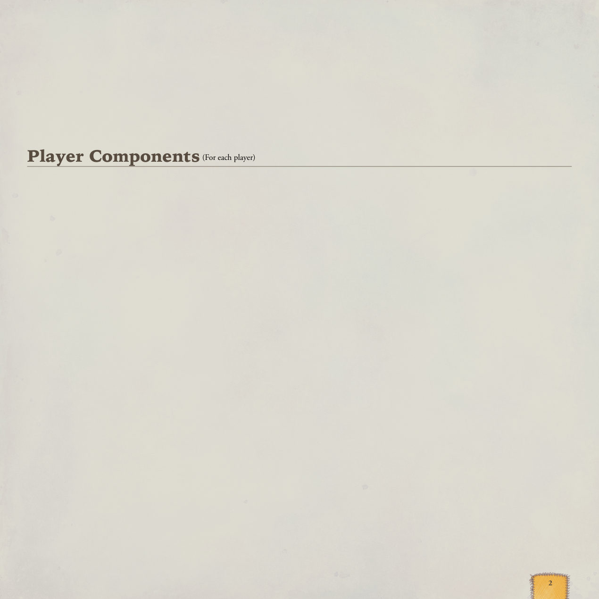
4关键概念
双面信条标记
游戏开始时，你是日心说主义者（Copernican），但可以变为地心说主义者（Ptolemaic）。通过翻转与移动信条标记在个人版图上追踪你当前信条。
信条图标
部分行动带此图标 📜。你必须根据双面信条标记当前显示面，执行对应版本（日心说或地心说）。
受信条影响的元素：观察星空、打出著作牌、打出发明、以及禁令。
信条标记也会影响终局计分。
行动图标与效果
执行主要行动后，你将获得若干图标以激活。这些图标分为两类：
- 次要行动：带圆形外框的图标，是可选的。
- 效果：无圆形外框的图标，是强制的。
怀疑轨与赎罪
游戏中，怀疑可能因你的行动、获得胜利点以及循环结束时而增减。他人回合中也可能增加你的怀疑。这代表宗教裁判的监视之眼。
怀疑增减
- 增加图标：将怀疑标记在怀疑轨上前进指定格数。
- 减少图标：将怀疑标记在怀疑轨上后退指定格数。标记永远不会低于「0」格。
赎罪 / 牢房 / 火刑架
赎罪、牢房、火刑架三个图标仅作指示符，不是怀疑轨上的格子。
获得赎罪牌
每当你的怀疑标记首次经过怀疑轨上的赎罪图标时，你必须拿取对应的赎罪牌：
- 从你场地区中拿取对应的赎罪牌，将其面朝下放在你的牌库顶部。
- 同一回合中你可能获得多张赎罪牌。
- 若你的牌库为空，新获得的赎罪牌就成为牌库的顶。
首次原则：仅当你怀疑标记首次经过某个特定图标时获得赎罪牌。标记若后退再经过同一图标，不再获得。
本循环必须打出：若你抽到赎罪牌进入手牌，你必须在本循环的某个回合中打出。手牌中的赎罪牌永远不能弃置。
牢房（逮捕与监禁）
若怀疑标记经过怀疑轨上的牢房图标，你的学者立即被捕：
- 将学者指示物移至主版图的牢房格。
- 监禁期间你无法使用学者。
- 若学者是从行动格被移入牢房，则放倒学者指示物表示本循环已用，直至循环结束阶段才重置。
- 学者离开后，原行动格立即空出。
释放
若怀疑标记在怀疑轨上后退经过牢房图标，你立即取回学者。这可在同一回合内发生。
- 若取回时学者是站立（说明本循环尚未使用），你可以在本循环稍后用它执行行动。
- 若取回时学者是放倒，保持原状直至循环结束阶段。
- 学者可被捕与释放多次。
火刑架
怀疑标记一旦经过火刑架图标，宗教裁判已经判处你的异端行径：
- 将学者移至主版图的火刑架格。
- 本游戏中你再也不能使用该学者。
- 将你的怀疑标记放回怀疑轨的「0」格。
- 继续按常规则追踪怀疑，但赎罪、牢房、火刑架图标不再影响你。
- 本游戏剩余时间内，你在怀疑轨上每前进 1 格，终局计分时计为 -2 胜利点。
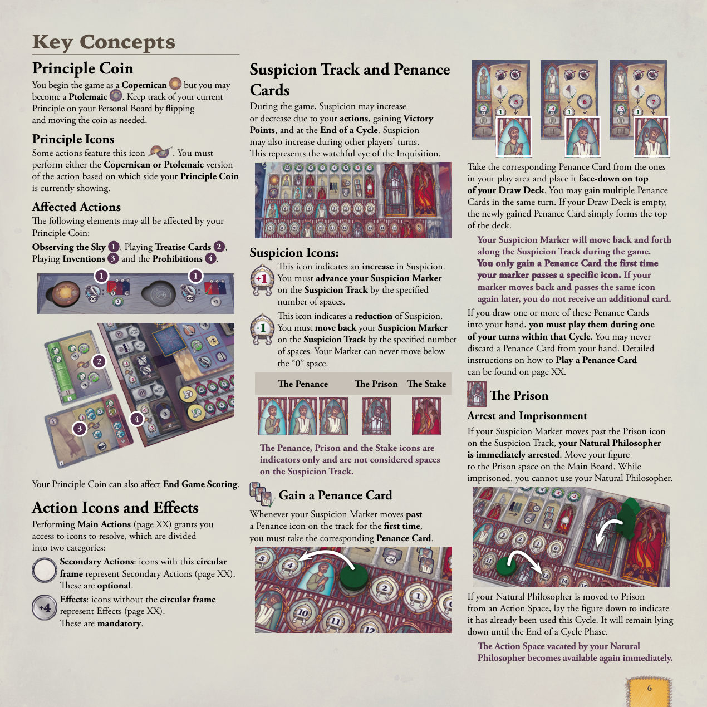
分数轨
分数标记沿分数轨前进，使你获得旅途板块使用权，但也会增加怀疑。
旅途格
分数标记到达分数轨上的交叉路口 A 时，你可以选择走哪条路继续追踪胜利点。
- 长路径：胜利点增长更慢，但到达或经过旅途格 B 时，你可以使用该旅途板块上的图标。
- 这些图标必须在回合结束前以任意顺序激活；若图标被分隔线 C 分隔，你必须选择激活其中一组。
- 回合外或行动阶段外获得图标使用权时，必须立即激活。
怀疑格
分数标记到达或经过分数轨上的怀疑板块 D 时，你必须将怀疑标记在怀疑轨上前进指定步数。怀疑板块按玩家人数翻面或移除：
| 玩家人数 | 处理规则 |
|---|---|
| 2 人局 | 首位到达或经过的玩家翻面怀疑板块。 |
| 3 人局 | 首位到达者翻面；第二位到达或经过者移除。 |
| 4 人局 | 首位到达者翻面；第三位到达或经过者移除。 |
超过 100 胜利点：若玩家胜利点超过 100，则不再因怀疑板块增加怀疑，也不能选长路径抵达旅途格。终局计分也适用此规则。
个人版图
个人版图代表你的工作室，分为三区：
书架
书架由 4 个学科轨组成，用于追踪书籍：天文学、物理学、数学、哲学。每条学科轨分为 4 个等级：
- Level I 与 Level II：各 3 格。
- Level III：4 格。
- Level IV：5 格。
获得书籍
每获得一本书籍 📕：
- 将该学科标记在对应学科轨上向右前进对应格数。
- 通用书籍 📕*（任意学科）：可任选一条学科轨前进。
精通奖励
当你的某个学科标记首次到达某学科轨的最后一格时，你获得一次免费行动：
- 从任意一张你的导师牌上移除任意一个蜡封。
- 将该蜡封放在主版图上对应学科精通轨的最左空位。
- 获得该空格所示的胜利点。
- 即使同一回合你的学科标记后退，也仍获得这次免费行动。
- 当标记位于某轨最后一格时，再获得该学科书籍会被弃掉。
- 每条精通轨上你只能放置 1 个蜡封。
消耗书籍
消耗一本或多本书籍，按顺序执行：
- 满足单次费用要求：在对应学科轨上，标记所在等级显示的书籍数至少等于费用。减免不降低等级要求，只减少实际支付数。
- 支付指定数量的书籍：将该学科标记向左前进对应格数。若已在最左格，则不能消耗该学科书籍。
窗
窗是你窥视星空的位置。放置观察板块并覆盖后激活图示图标（需支付相应费用）。
书桌
书桌存放硬币 🪙 与研究标记 🔬。每位玩家最多持有 10 枚硬币 与 10 枚研究标记。获得时移到书桌；支付时放入你场地区的储备池。不能多于 10，不能少于 0。双面信条标记也放在书桌上。
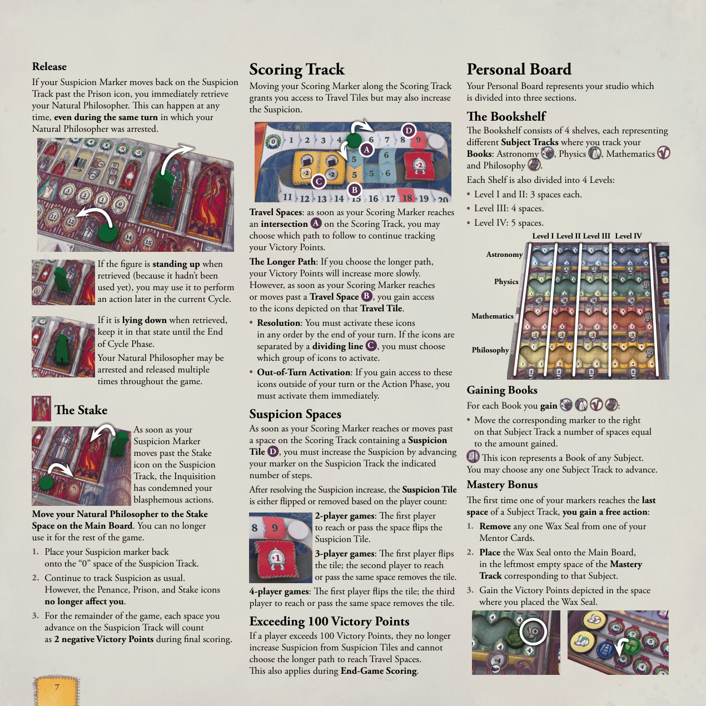
导师牌与蜡封
准备时，你获得一组导师牌，并在每张牌的「亮起的蜡烛」位上放置指定数量的蜡封。下图中左侧第一张为计分导师牌，其余三张为标准导师牌。
移除蜡封
游戏中部分行动允许你从导师牌上移除一个或多个蜡封：可以弃置到场地区，也可以放到主版图或著作版图上。你可自由选择从哪张导师牌上移除哪个蜡封。
解锁导师牌
当一张导师牌上所有蜡封均被移除，该牌解锁，关联图标或计分生效。若同一时间解锁多张，逐张完整结算。你必须在回合结束前以任意顺序激活解锁的图标。解锁的计分导师牌上的胜利点在终局时才发放。
蜡封池
若你被要求在主版图或著作版图上放置蜡封，但你的导师牌上没有可用蜡封，可以从场地区的储备池中拿取一个。你永远不能从主版图或著作版图上移除蜡封，蜡封一旦放置就保留到游戏结束。
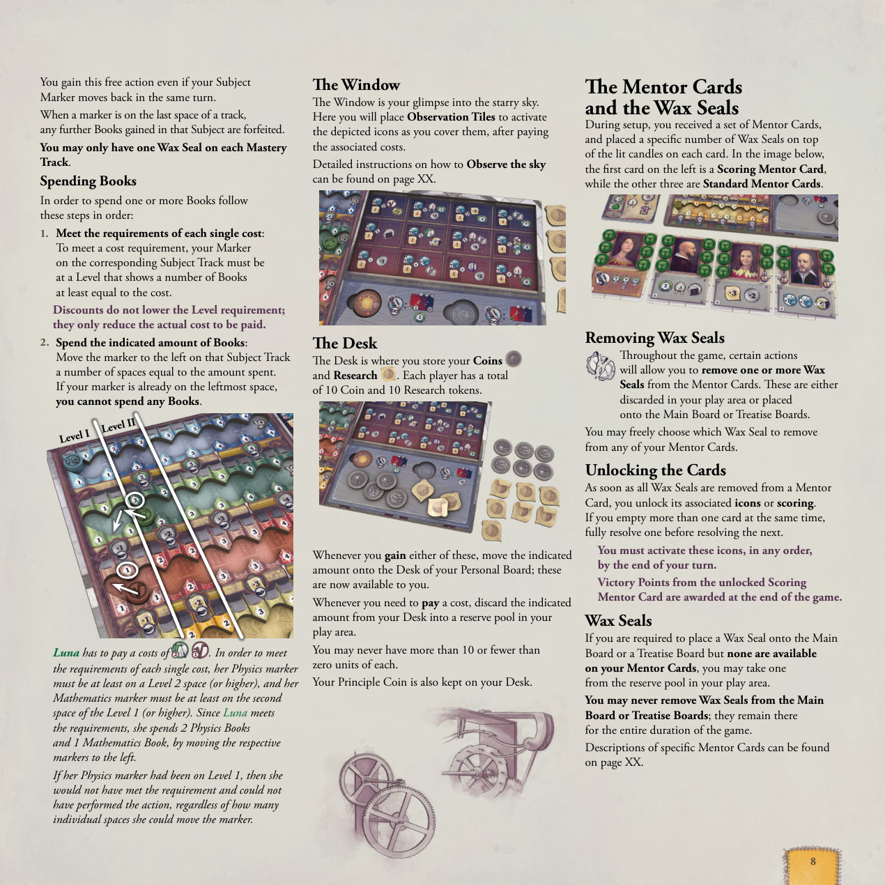
5准备
本节详述首次游戏与后续游戏的准备。建议首次游戏使用「首次游戏」准备，之后所有局使用「后续游戏」准备。
通用准备（所有局通用）
使用 Card Holder Book？请按第 XX 页的指示操作。
- 将主版图置于游戏区中央。旁边按图示将四张著作版图堆成金字塔，Level I 在底部，Level IV 在顶部。
- 将怀疑板块的「2」面朝上，放置在分数轨上对应的怀疑格。
- 将旅途板块按背面分成数堆，分别洗混。每堆抽 3 张面朝上放入分数轨上对应位置，按字母对齐。
- 将宗教裁判标记面朝下放入回合顺序轨的指定位。
- 将循环标记放在循环轨的第一步上。
- 将发明牌按时期编号（I、II、III）背面分成三堆，分别洗混。将三堆面朝下放在主版图旁。从时期 I 牌组抽 4 张面朝上放入工坊（主版图左上方位），从上到下排列。
- 将观察板块按背面星数分成三堆，分别放入对应布袋。将布袋放在主版图旁。
- 将 4 枚精通标记随机面朝上放入 4 个专用位。
- 将毕业板块按背面分堆洗混，每堆抽 1 张放入主版图对应毕业板块位。
- 将禁令板块按背面分堆洗混，每堆抽 1 张放入主版图对应禁令板块位。
- 准备著作牌：按 Level（I、II、III、IV）将著作牌与随机卡分成四堆。Level I：全数面朝上放底层（紫色牌保持原位，其余按数字升序从左到右排列）。Level II/III/IV：洗混后抽 4/3/2 张面朝上放入对应排（紫色牌保持原位），其余按数字升序从左到右排列。最终检查：每堆应有 1 张随机卡 + 玩家数量张著作牌。
- 若少于 4 人游戏，使用未使用颜色的组件进行以下调整：
2 人局：抽 2 张设置卡。
3 人局：抽 1 张设置卡。
将设置卡所示的蜡封放在每张指示著作牌与精通轨最左胜利点空格 A 上方。然后将学者米宝放入主版图顶部大教堂 B 的指示空格。
冲突处理：毕业板块与禁令板块若带相同的红色数字，则两者不能同时在场。发生冲突时，弃掉该禁令板块并从堆中补抽一张。
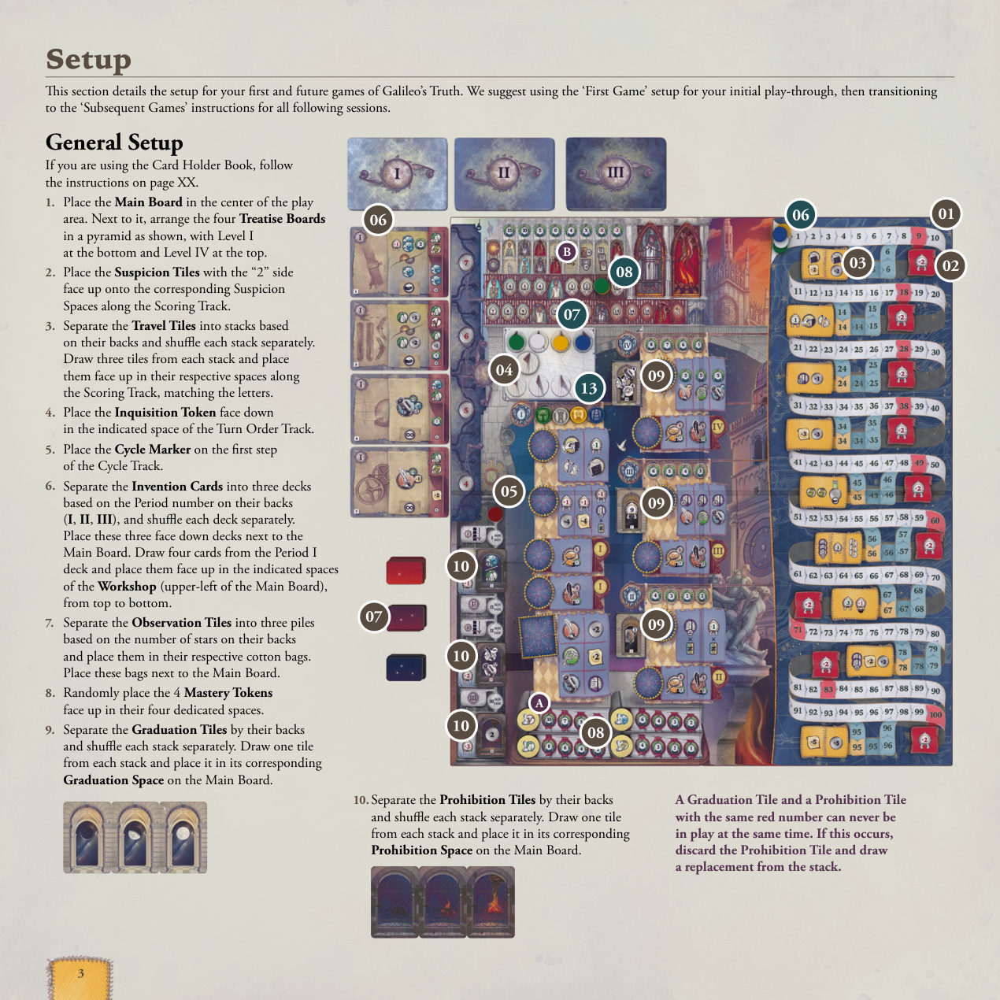
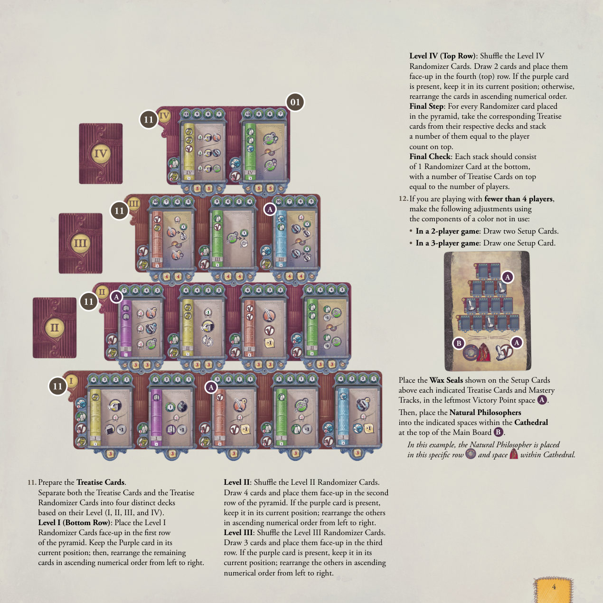
玩家准备
拿起你所选颜色的组件，依次执行：
- 将个人版图置于面前。
- 将学者米宝竖立放在个人版图旁。
- 将双面信条标记放在个人版图的指定位上，哥白尼面朝上。
- 将 10 枚硬币与 10 枚研究标记放在场地区。
- 拿取显示你颜色蜡封的赎罪牌（Level I、II、III），放入场地区。
- 将分数标记放在分数轨的「0」格。
- 随机决定先手玩家。将回合顺序标记从左到右放入当前回合顺序轨，从先手玩家开始按顺时针进行。
- 将怀疑标记放在怀疑轨的第 2 格（标「1」）。
- 准备导师牌与起始著作牌：
首次游戏：按字母将导师牌分组，每组含 3 张标准导师牌 + 1 张计分导师牌。拿取起始著作牌，每组配对应字母的起始著作牌。根据回合顺序分配：先手玩家 = A 组，第二位 = B 组，第三位 = C 组，第四位 = D 组。
后续游戏：将标准导师牌与计分导师牌分成两堆洗混。亮出与玩家数量相等的计分导师牌。洗混起始著作牌，与亮出的计分导师牌一一面朝上随机配对。最后给每位玩家发 4 张面朝下的标准导师牌。 - 每位玩家查看自己的标准导师牌，选 1 张留下，其余传给左手玩家；从收到的牌中再选 1 张留下、其余传走。重复直到各玩家选出 4 张。最终留下 3 张，多余 1 张移出游戏。每位玩家应有 3 张标准导师牌。
- 按回合逆序，每位玩家从剩余配对中选择 1 张计分导师牌及其配对的起始著作牌。
- 将所有导师牌面朝上放在场地区。在每张牌的「亮起蜡烛」位上各放置 1 个蜡封。
- 在主版图的学术等级 Level I 位上放置 1 个蜡封。剩余的蜡封放入场地储备池。
- 首次游戏：在个人版图上将每个学科标记放在对应学科轨的第 2 格。
后续游戏：在个人版图上将每个学科标记放在对应学科轨的第 1 格（最左）。 - 获得 2 本书籍：将与你刚获得的起始著作牌学科对应的学科标记，在学科轨上前进 2 格。
- 拿取显示你颜色蜡封的玩家著作牌（天文学、物理学、数学、哲学、万能）。洗混这些牌组成一个面朝下的牌库放在个人版图旁，抽取 3 张作为手牌。
- 将起始著作牌放在该牌库底部。
- 拿取一张玩家辅助卡。
最后，将所有未使用的组件放回游戏盒。
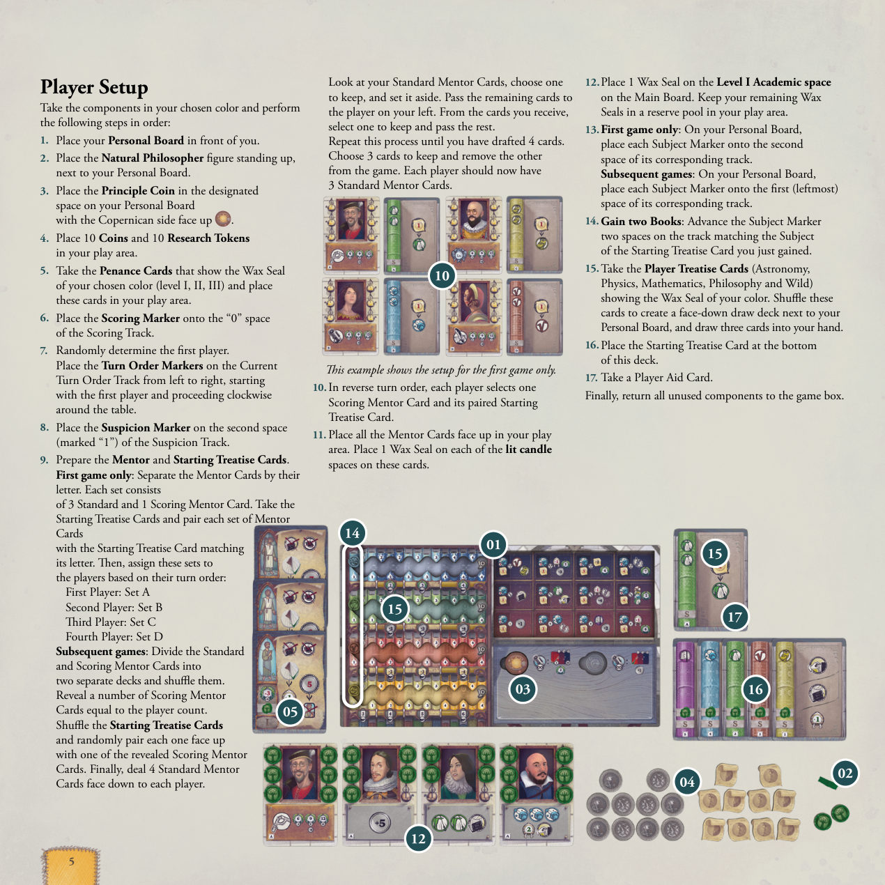
6游戏流程
游戏在 3 个时期进行，每个时期包含不同数量的循环：
| 时期 | 循环数 |
|---|---|
| 第一时期 | 2 个循环 |
| 第二时期 | 2 个循环 |
| 第三时期 | 1 个循环 |
每个循环进一步分为三个阶段：
- 收入阶段（循环 1 跳过）
- 行动阶段
- 循环结束阶段
阶段 1：收入阶段（循环 1 跳过）
本阶段中，玩家激活图标以结算来自两个来源（发明与书架）的行动与效果。玩家可以同时结算收入；若时序相关，按回合顺序处理。
按顺序执行：
- 发明：你必须激活场地中所有收入型发明 ⚙️ 的图标。若有多个图标，你可以决定结算顺序。若发明牌显示此图标 📜，则根据双面信条标记当前显示面，执行哥白尼或托勒密部分。
- 书架：书架中学科提供的收入由对应学科标记所在等级决定。按从上到下顺序结算：
- 天文学 🌌：提供所示胜利点，沿分数轨追踪。
- 物理学 ⚛️：提供所示硬币，置于书桌。
- 数学 🧮：提供所示研究标记，置于书桌。
- 哲学 📚：决定你需要从牌库抽取的牌数。若牌库为空，洗混弃牌堆形成新牌库；若仍不足，抽尽可能多。
阶段 2：行动阶段
本阶段中，玩家将进行若干行动轮次。每轮中，每位玩家执行一个主要行动，从先手玩家开始按当前回合顺序轨顺序进行。
解析行动
当你选择一个主要行动时，你将获得若干图标。激活这些图标可以执行次要行动和/或效果。
- 你可以决定激活图标的顺序。
- 次要行动：带圆形外框的图标，总是可选。
- 效果：无圆形外框的图标，总是强制。
- 减免：若行动提供减免，必须应用。
- 注意箭头与括号：
- 箭头：若执行箭头起始的行动，则也执行箭头指向的行动。
- 括号：括号内带冒号的图标表示对当前次要行动的修改。
空牌库抽牌：若需抽牌而牌库为空，先抽尽手牌可抽的数量，洗混弃牌堆形成新牌库，再抽剩余牌数。若仍不足，抽尽可能多。
本循环中打出的牌保持面朝上在你的场地区，直到循环结束阶段。
行动阶段结束
当所有玩家都跳过时，行动阶段结束。
阶段 3：循环结束阶段
所有玩家跳过后，行动阶段结束。按顺序执行：
- 将所有回合顺序标记移回当前回合顺序轨，保持其相对位置。
- 若宗教裁判标记面朝上，将其翻为面朝下。
- 将循环标记在循环轨上前进 1 格，并按顺序结算所经过的所有转折点。
- 清理（循环 5 跳过）：为下一循环做准备。
- 从主版图取回你的学者米宝，竖立放在场地区。若学者在火刑架，必须留在原位。若在牢房，留在原位但确保是竖立。
- 将所有每循环一次发明牌转回竖立方向，可以再次使用。
- 将场地区和手牌中的所有牌移入弃牌堆。
转折点
循环标记经过转折点时按序结算：
更新工坊：循环 1 和 3：从游戏中移除工坊最底部的发明牌，将剩余牌下移，从当前牌组亮 1 张新牌。若牌组为空，不亮新牌。
切换发明牌组：循环 2 和 4：从游戏中移除当前发明牌组与工坊中所有剩余牌（玩家保留已获得的发明），从新时期的牌组亮 4 张新牌放入工坊。
解析当前禁令：在循环 2、3、5 检查你是否遵守当前禁令的限制。
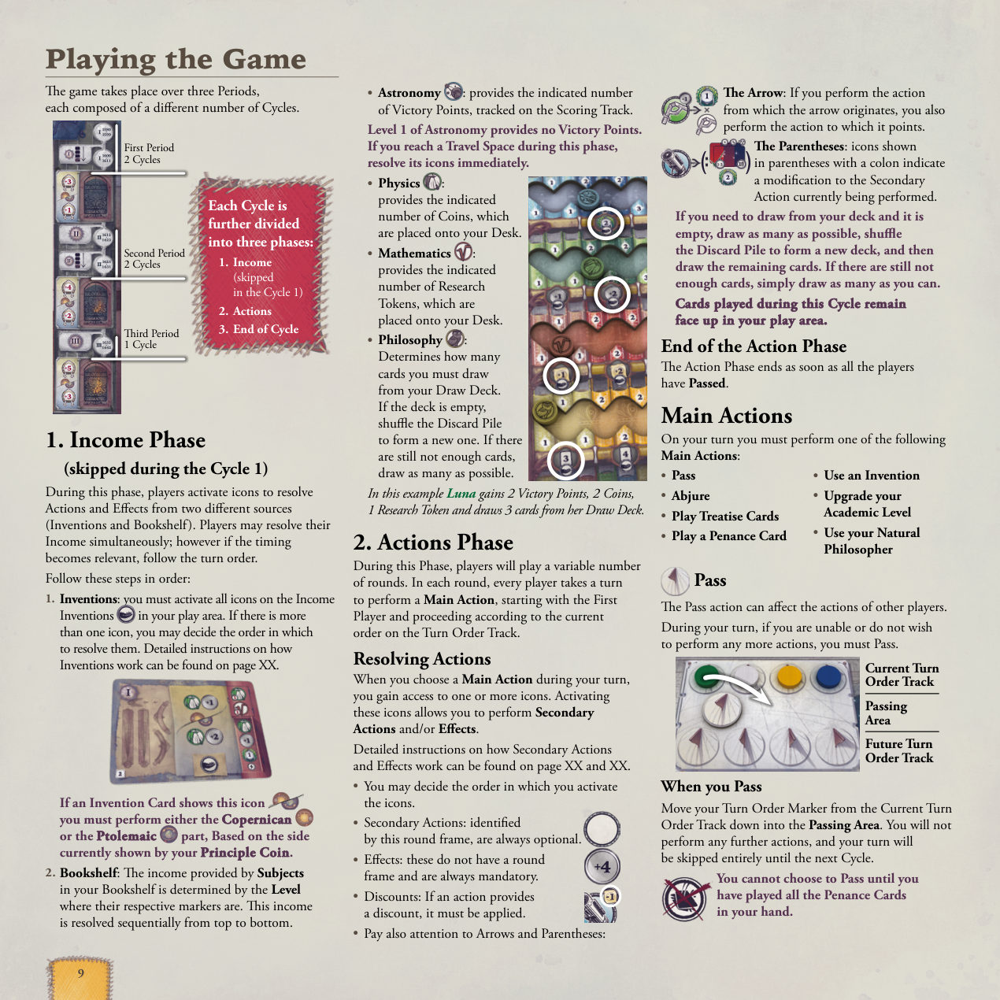
7主要行动
在你的回合中，你必须执行以下主要行动之一：
- 跳过（Pass）
- 弃绝（Abjure）
- 打出论文牌（Play Treatise Cards）
- 打出赎罪牌（Play a Penance Card）
- 使用发明（Use an Invention）
- 提升学术等级（Upgrade your Academic Level）
- 派遣学者（Assign your Natural Philosopher）
跳过（Pass）
跳过行动会影响其他玩家的行动。在你的回合中，如果你无法或不想执行更多行动，你必须跳过。
当你跳过时
- 将你的回合顺序标记从当前回合顺序轨向下移入跳过区。
- 你将不再执行任何后续行动，直到下一个循环之前你的回合被完全跳过。
限制：在手中没有打出所有赎罪牌之前，你不能选择跳过。
同一行动轮次中跳过
如果其他玩家在同一行动轮次的后续回合中跳过，将他们的回合顺序标记移入跳过区，放在任何已存在标记的左侧。
行动轮次结束
一旦当前回合顺序中的最后一位玩家完成他的回合，立即结算以下之一：
- 无人跳过：进入下一个行动轮次。
- 部分玩家跳过，仍有玩家可继续行动：
- 若宗教裁判标记是面朝下的，将其翻为面朝上。现在进入「宗教裁判开始怀疑」机制（见下文）。
- 若已经是面朝上的，保持原样。
- 无论哪种情况，将跳过区中的所有标记向下移入未来回合顺序轨，保持它们的相对从左到右顺序。不要移动已经在未来回合顺序轨上的标记。
- 进入下一个行动轮次。
- 所有玩家都已跳过：将跳过区中的所有标记移入未来回合顺序轨，保持它们的相对从左到右顺序。不要移动已经在未来回合顺序轨上的标记。本行动阶段结束。
宗教裁判开始怀疑
触发后：从此刻起，每当玩家执行主要行动（非跳过）时，必须在回合开始时将怀疑值增加 1。
跳过不会导致怀疑增加。
弃绝（Abjure）
部分次要行动与效果会受你当前信条影响（见第 6 页）。
第三时期（即循环 5）期间你不能执行弃绝行动。
抉择
游戏开始时，你是日心说主义者。
作为回合中的主要行动，你可以翻转你的双面信条标记，将其放入个人版图右侧的格子，从而变为地心说主义者。
此选择最终且不可逆。
宗教裁判的连锁反应
选择弃绝会带来即时后果：
- 对你：立即将怀疑值降低 5。
- 对他人：所有其他日心说主义玩家必须立即将怀疑值提升 1。
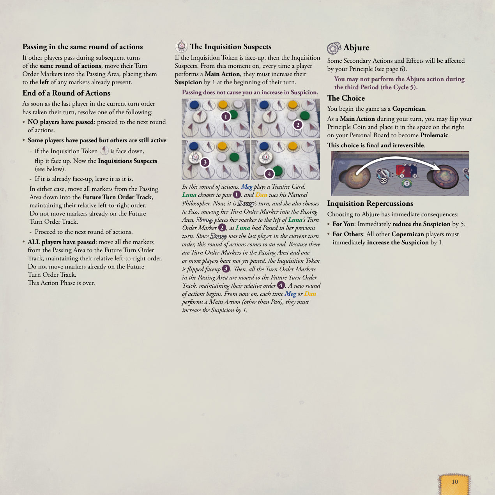
打出论文牌（Play Treatise Cards）
著作牌代表你撰写的论文与文档，将永远改变我们所知与所信。
作为回合中的主要行动，你可以从手牌打出著作牌到你的场地区。具体著作牌详情见第 XX 页。
著作牌结构
著作牌分为两部分：
- A. 著作牌书脊（左侧）：颜色、纹理与最上方图标决定学科：
- 天文学 🌌
- 物理学 ⚛️
- 数学 🧮
- 哲学 📚
- 任意学科（万能） 🃏
- B. 翻开著作（右侧）：显示次要行动与效果图标。
如何打出著作牌
打出一张或多张著作牌，按步骤：
- 选择并堆叠：从手牌中选择一张或多张著作牌面朝上放在场地区。多张同时打出时堆叠，让所有牌的书脊可见。最顶上的牌为「激活牌」。
同学科：堆叠中所有牌必须共享同一学科（皆物理学，或皆天文学）。
紫色牌：若单独打出（或仅与其他紫色牌一起），它代表你所选的任何学科；若与特定学科牌一起打出，则匹配该学科。 - 获得书籍：必须获得堆叠中所有牌书脊上可见的书籍。
紫色牌：若与特定学科牌一起打出，书籍视为该学科（例：天文学）。若单独打出，你为所有书籍选择一个学科。 - 激活图标：激活激活牌上的图标。
- 效果 1 强制；次要行动 2 可选。
- 分组 3：图标可由分隔线分隔：
- 简单分隔线：必须选择激活其中一组。
- 怀疑图标 👁：可以免费激活一组；或通过在激活第二组前将怀疑值增加 1 来激活两组。
- 信条图标 📜：必须激活与双面信条标记当前面（哥白尼或托勒密）匹配的那一组。
之前回合中打出的著作牌在本行动中忽略。
打出赎罪牌（Play a Penance Card）
每当你的怀疑标记首次经过怀疑轨上的赎罪图标 ⛪，你获得对应的赎罪牌。获得时将其面朝下放在牌库顶部。
当你抽到赎罪牌进入手牌，必须作为主要行动在本循环的某个后续回合中打出。
禁止弃置：手牌中的赎罪牌永远不能弃置，也不能选择跳过，直到所有赎罪牌都已打出。
打出步骤
- 将该牌面朝上放在场地区。
- 若宗教裁判标记面朝下 ⛪，立即将你的怀疑值减少 1。
- 无论是否减少了怀疑，你可以支付牌面所示硬币数 2，将该赎罪牌从游戏中移除。
若你无法或不愿支付硬币，该牌保持面朝上在场地区。
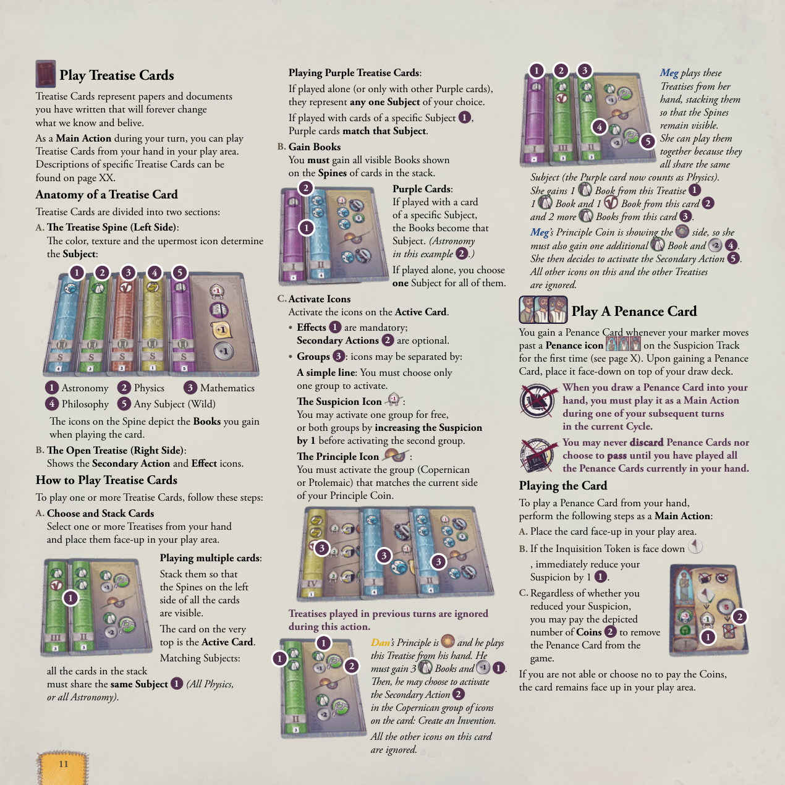
使用发明（Use an Invention）
发明牌代表你研究中的突破与创造。
激活发明
作为回合中的主要行动，你可以使用场地区中带此图标 1 的每循环一次发明牌。方法是：
- 将该牌旋转 90°向右表示已用。本循环内不能再用。
- 激活牌中央所示的所有图标 2。
- 循环结束阶段时这些发明牌会转回竖立，恢复可用。
其他类型发明（被动或收入型）不需要行动即可激活。具体发明牌详情见第 XX 页。
提升学术等级（Upgrade your Academic Level）
作为回合中的主要行动，你可以提升你的学术等级。
游戏开始时你在学术等级 Level I 1。要升到下一等级，必须满足对应毕业板块 2 所示的要求。
如何升级
若你满足要求：
- 从任意一张你的导师牌上拿取一个蜡封，放在主版图上下一个学术等级最左的可用蜡空格上。
- 立即获得该空格所示的胜利点。
进阶规则
- 你必须按顺序升级学术等级（I → II → III → IV），不能跳过。
- 每个行动只能升级一次学术等级，即使满足多级要求。
- 提升学术等级让你可以使用学者在更强大的行动格上。
派遣学者（Assign your Natural Philosopher）
作为主要行动，你可以将可用的学者派遣到主版图上你学术等级范围内的某个行动格。
学者仅在个人版图旁竖立时可用。若学者已放倒或已在某个行动格、牢房、火刑架，则不可用。
一旦派遣，你必须激活所有相关效果，并可选择是否激活次要行动。若图标被分隔线分组，你必须选择激活其中一组。
行动格类型
- 独占行动格：本循环内只能容纳一名学者。若已被占用则不可放置。
- 共享行动格：同一循环内可被多名学者同时占据。
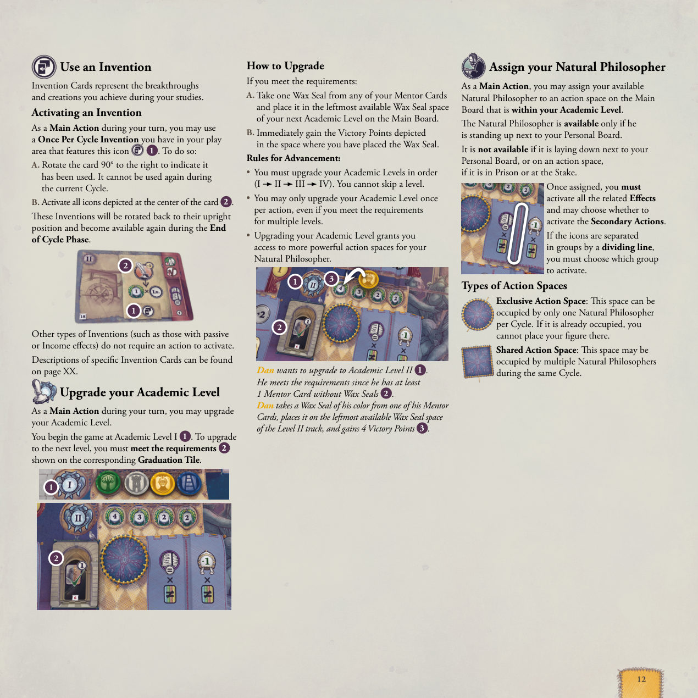
8次要行动
次要行动可以在著作牌、主版图行动格和发明牌上找到。你作为主要行动的结果执行这些行动。
撰写著作（Write a Treatise）
撰写著作按以下顺序：
- 选择著作版图上任意一张你不已有同色蜡封关联的著作牌。每张著作你最多只能有 1 张。
- 支付书籍：支付著作版图上该牌旁边所示的书籍（参考「消耗书籍」规则，第 X 页）。
- 支付研究标记：支付所选牌下方所示的研究标记。花费按行决定：
- 底层：支付 3 个研究标记。
- 其他行：支付牌下方所示的两个研究标记费用，可应用以下减免：
- 部分减免 🔻：若你已有同色蜡封关联其下方直接相连的两张著作牌之一，可忽略一个研究标记费用。
- 完全减免 ⛔：若两张直接相连的著作牌都有关联蜡封，则不支付研究标记。
- 放置蜡封：从一张导师牌上拿取一个蜡封，放在所选著作牌上方最左的可用蜡空格上。获得你刚刚覆盖的空格所示的胜利点。
- 取牌：从著作版图上拿取所选著作牌，选择：
- 放在牌库顶部（若牌库为空则成为第一张）。
- 加入手牌。若如此做，必须立即从手牌弃一张不同的著作牌到弃牌堆。注意：你永远不能弃置赎罪牌。
誊抄著作（Copy a Treatise Card）
你可以从著作版图上拿取一张著作牌（不超过行动 1 所示的等级），但必须满足：
- 你尚未拥有该著作。
- 该牌上至少已有一名其他玩家的蜡封关联。
誊抄著作按步骤：
- 支付所需硬币数 2。
- 从一张导师牌上拿取一个蜡封，放在所选著作牌上方最右的可用蜡空格上 3。不获得胜利点。
- 占据该著作牌最左蜡空格的那位玩家，立即获得行动 4 所示的胜利点。
- 从著作版图上取著作牌，选择放到牌库顶部或加入手牌（若加入手牌，必须先弃不同的著作牌）。
阅读著作（Read a Treatise Card）
你可以直接从著作版图上激活一张著作牌的图标（不超过行动 1 所示的等级），但必须满足：
- 该牌至少已有一个蜡封（你的或其他玩家的）关联。
阅读著作按步骤：
- 支付所需硬币数 2。
- 选择一张著作版图上、学术等级允许范围内、且至少有一个任意玩家蜡封关联的著作牌 3。
- 激活该牌上所有图标，如同执行「打出论文牌」行动 4。不从著作版图上拿走该牌。
- 占据该著作牌最左蜡空格的那位玩家，立即获得行动 5 所示的胜利点。若你本人占据最左空格，你不会获得这些额外胜利点。
由于你直接从版图上打出著作牌，不能与你手中的牌组合。
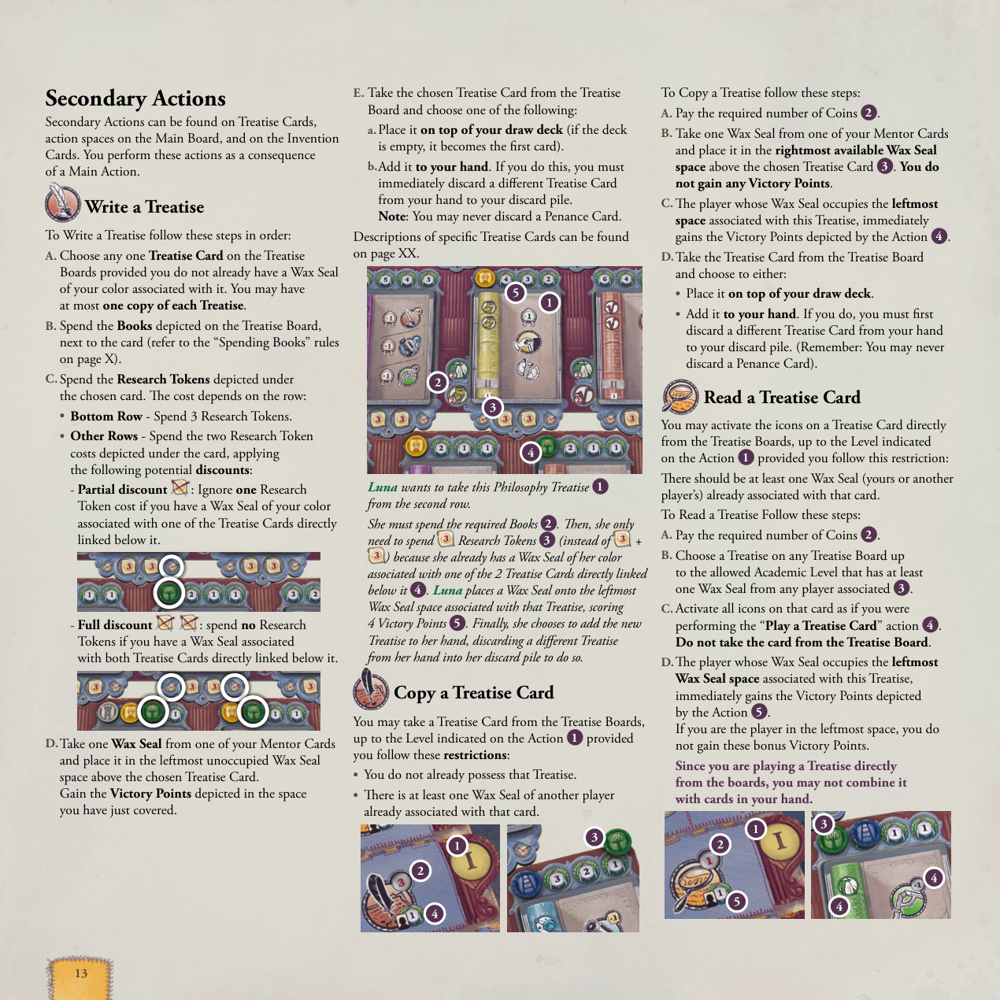
创造发明（Create an Invention）
创造发明按步骤：
- 选择主版图工坊中任意一张发明牌，支付：
- 所选牌旁边空位上所示的硬币 1。
- 牌本身右上角所示的费用 2。
- 激活牌右下角所示的所有图标 3。次要行动是可选的。
- 将该发明牌面朝上放在你的场地区。
- 回合结束时，将工坊中剩余牌下移填补空位（如需要）。从当前时期的发明牌组抽 1 张新牌放入顶上空位。若牌组为空，不亮新牌。
发明牌类型
发明牌共有四种类型，由牌底图标标识：
- 收入型：必须在收入阶段激活。
- 持续型：始终激活。每当所示条件满足时必须触发。
- 每循环一次：可作为主要行动在你的回合中激活。
- 终局计分型：终局计分时提供满足特定条件的额外胜利点。
具体发明牌详情见第 XX 页。
观察星空（Observe the Sky）
通过「观察星空」行动，你透过窗格凝视夜空，拿取一张观察板块放在个人版图的窗区。
通用规则
- 信条标记：本行动的具体效果取决于双面信条标记当前面（个人版图上也有指示）。
- 瓦片等级：观察板块有三个等级。每级必须放在窗区对应的行 1。
- 重洗：若抽牌堆为空，洗混对应的弃牌堆形成新堆。
- 放置规则：观察板块必须放在个人版图窗区的一个可用空格：
- 你的第一张观察板块必须是 Level I，放在起始位 🪟（左下角）2。
- 之后所有瓦片，空格仅在「空」且与窗区中已放瓦片「正交相邻」时可用。
观察星空步骤
- 选择要拿的观察板块等级，确保你有可用空格。
- 根据双面信条标记，从牌堆抽瓦片：
- 🌞 哥白尼面：亮 2 张瓦片，选 1 张拿走，弃另一张。
- 🌍 托勒密面：亮 1 张瓦片并拿走。
- 选择窗区的一个可用空格，支付空格左侧所示的研究标记与天文学书籍费用。
- 以任意顺序激活空格上的图标与观察板块上的图标。
- 将该观察板块面朝下放在该空格。
- 根据双面信条标记，获得即时奖励：
- 🌞 哥白尼面：获得 2 胜利点。
- 🌍 托勒密面：获得 1 硬币。
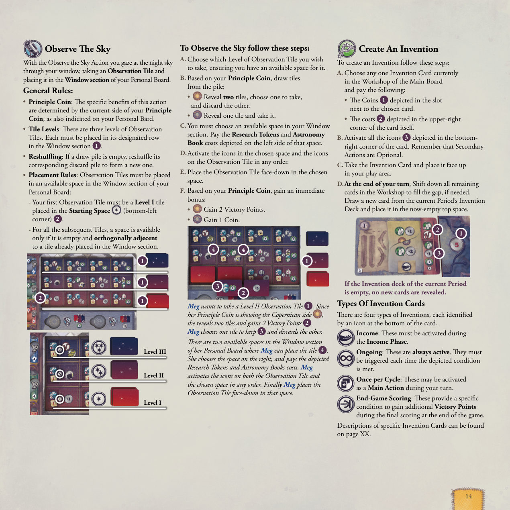
9效果
效果为你提供硬币、研究标记、书籍、胜利点，以及增减怀疑。所有效果都是强制的。
获得所示数量的硬币。
支付所示数量的硬币。
获得所示数量的研究标记。
支付所示数量的研究标记。
获得所示数量的胜利点。
除本行动已有胜利点外，另获得所示数量的胜利点。
游戏结束时失去所示数量的胜利点。
每升 1 级学术等级，获得 2 胜利点。
获得的胜利点翻倍。
占据该著作牌最左蜡空格的玩家获得所示数量的胜利点。
根据某些特定条件获得或失去胜利点。
基于特定等级获得胜利点。
对每张不同学科著作牌（最多 4 张）减少怀疑 1。紫色著作牌忽略。
将怀疑减少所示数量。
将怀疑增加所示数量。
所有其他玩家增加怀疑所示数量。
所有当前信条为哥白尼的玩家增加怀疑所示数量。
获得等同于你场地区不同学科著作牌数（最多 4 张）的同学科书籍。紫色牌忽略。
将任选学科标记移至下一等级的第 1 格。若已在 Level IV 则不能再用此效果。
获得所示数量的指定学科书籍。
满足要求（第 XX 页）并支付所示数量的指定学科书籍。
将一个蜡封放在指定精通轨的最左可用空格，并获得所示数量的胜利点。
获得所示数量的同学科书籍。
获得任意 1 学科的 1 本书籍。
从一张导师牌上移除一个蜡封，放在个人版图旁。
从主版图任一行动格取回学者放在个人版图旁。若学者在牢房或火刑架则不能取回。
如同在收入阶段般，从物理学轨获得硬币。
如同在收入阶段般，从数学轨获得研究标记。
抽取一张牌（Draw a Card）
从你的牌库抽一张牌。若牌库为空，洗混弃牌堆形成新牌库后继续抽。若你的所有牌都在手牌或场地区，则不能再抽牌。
从游戏中移除一张著作牌（Remove a Treatise Card from the Game）
你可以通过选择以下任一位置的著作牌将其从游戏中移除：
- 你的手牌。
- 你的弃牌堆。
- 你的场地区（已经打出的牌）。
立即获得该牌书脊上所示的书籍 1。
此行动不能移除赎罪牌。
小贴士：将弃牌堆、打出的牌、移除的牌分堆放好，避免混淆。记住：
- 你可以随时查看弃牌堆与已移除的牌。
- 你永远不能翻看牌库里的牌。
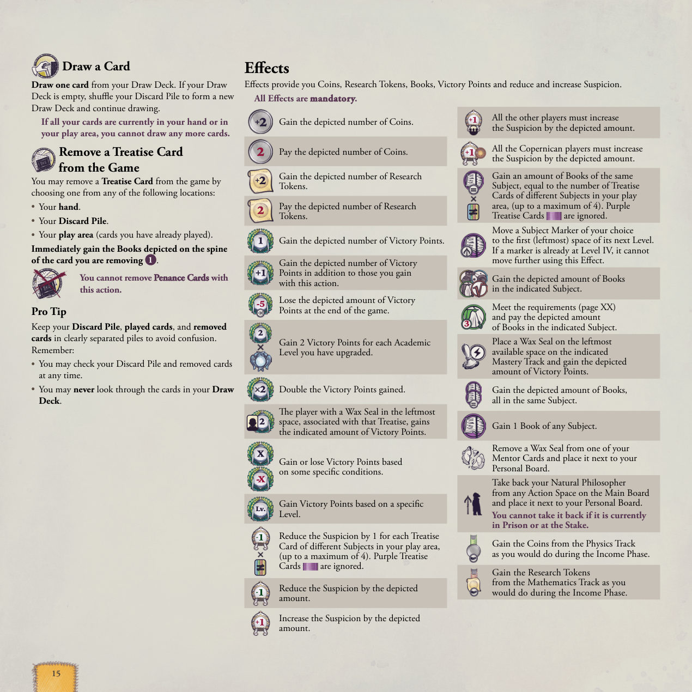
10循环结束阶段
所有玩家跳过后，行动阶段结束。按顺序执行：
- 将所有回合顺序标记移回当前回合顺序轨，保持其相对位置。
- 若宗教裁判标记面朝上，将其翻为面朝下。
- 将循环标记在循环轨上前进 1 格，并按顺序结算所经过的所有转折点。
- 清理（循环 5 跳过）：
- 从主版图取回学者米宝，竖立放在场地区。若学者在火刑架，留在原位。若在牢房，留在原位但确保竖立。
- 将所有每循环一次发明牌转回竖立，可再次使用。
- 将场地区和手牌中的所有牌移入弃牌堆。
转折点
更新工坊：循环 1 和 3 — 从游戏中移除工坊最底部的发明牌，将剩余牌下移，从当前牌组亮 1 张新牌。若牌组为空，不亮新牌。
切换发明牌组：循环 2 和 4 — 从游戏中移除当前发明牌组与工坊中所有剩余牌（玩家保留已获得的发明），从新时期的牌组亮 4 张新牌放入工坊。
解析当前禁令：在循环 2、3、5 检查你是否遵守当前禁令的限制。
只要你所拥有的相关元素数量少于禁令板块 3 上所示的限制，你就遵守了限制。
- 成功：若遵守禁令，什么也不会发生。
- 失败：若未遵守，必须将怀疑值增加。增加量取决于当前循环与双面信条标记当前面。
所有禁令的描述见第 XX 页。
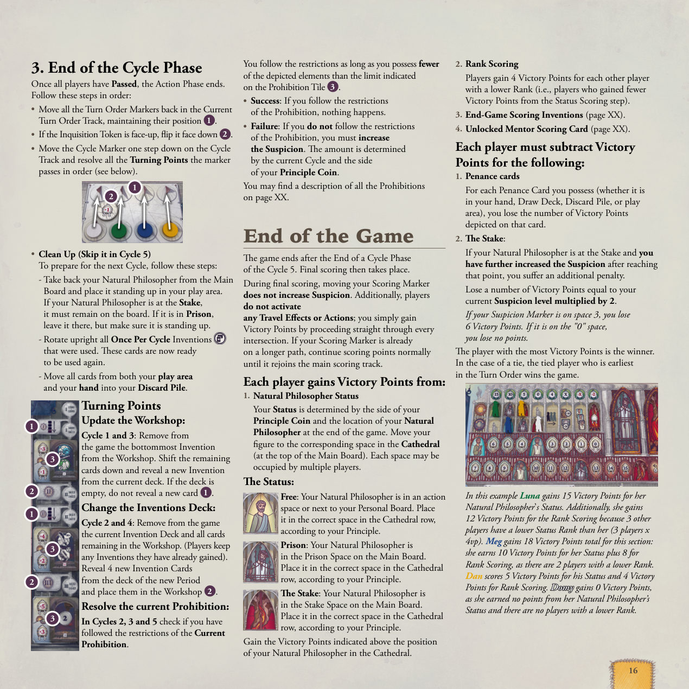
11终局与计分
游戏在循环 5 的循环结束阶段后结束。然后进行终局计分。
终局计分时，移动分数标记不会增加怀疑。此外，玩家不激活任何旅途效果或行动；只是简单地经过每个交叉路口获得胜利点。若你的分数标记已在长路径上，继续正常得分直至重新汇入主分数轨。
每位玩家从以下来源获得胜利点
- 学者状态
- 排名计分
- 终局计分发明（第 XX 页）
- 解锁的导师计分牌（第 XX 页）
1. 学者状态
你的状态由双面信条标记当前面与学者在游戏结束时的位置决定。将你的学者米宝移至主版图顶部大教堂的对应空格。每格可容纳多名玩家。
| 状态 | 条件 |
|---|---|
| 自由 | 你的学者在行动格或个人版图旁。依据信条放入大教堂对应行。 |
| 牢房 | 你的学者在主版图牢房格。依据信条放入大教堂对应行。 |
| 火刑架 | 你的学者在主版图火刑架格。依据信条放入大教堂对应行。 |
获得学者在大教堂中位置上方所示的胜利点。
2. 排名计分
每位玩家每比一名其他玩家低排名，获得 +4 胜利点（即排名低的玩家数 × 4）。
3. 终局计分发明
你已获得的终局计分发明牌提供具体得分条件（详见第 XX 页）。
4. 解锁的导师计分牌
你已解锁的计分导师牌提供终局得分（详见第 XX 页）。
每位玩家扣除胜利点
- 赎罪牌：每张你持有的赎罪牌（无论在手牌、牌库、弃牌堆还是场地区），扣除该牌面所示胜利点。
- 火刑架罚分：若你的学者在火刑架，且到达火刑架后你又继续增加了怀疑值，将承受额外罚分。
失去等同于你当前怀疑值 × 2 的胜利点。
若你的怀疑标记在 3 格，失去 6 胜利点。若在「0」格，则不扣分。
胜者：胜利点最多的玩家获胜。若平局，回合顺序最靠前的玩家获胜。
计分示例
Luna：学者状态获得 15 胜利点；排名计分获得 +12 胜利点（其他 3 名玩家排名更低，3 × +4）。
Meg：学者状态获得 10 胜利点；排名计分获得 +8 胜利点（2 名玩家排名更低，2 × +4），合计 18 胜利点。
Dan：学者状态获得 5 胜利点；排名计分获得 +4 胜利点（1 名玩家更低）。
Domy：学者状态获得 0 胜利点；无玩家排名更低。